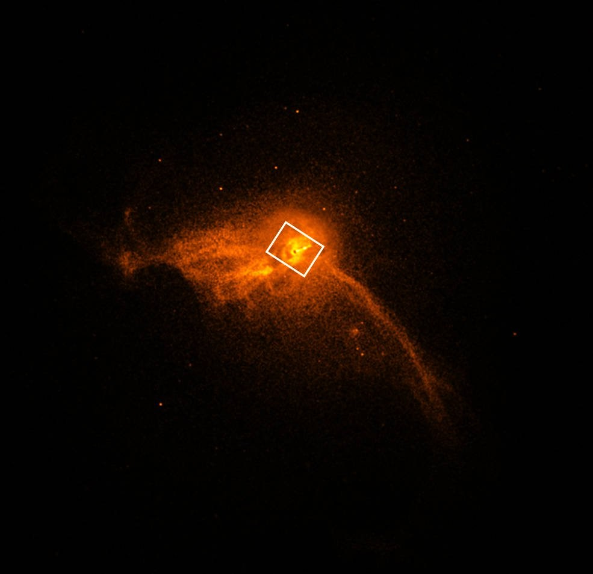

by Anthony
Posted on January 1, 2019 at 12:00 PM
"Atingimos algo que se presumia ser impossível pela geração passada", afirma Sheperd S. Doeleman, diretor do projeto no centro de astrofísica de Harvard & Smithsonian. "Avanços em tecnologia, conexões entre os melhores observatórios de rádio do mundo, e algoritmos inovadores se combinaram para abrir uma nova perspectiva sobre buracos negros e o horizonte de eventos". No dia 10/04/2019 exatamente às 10h da manhã, horário de Brasília.
O Telescópio do Horizonte de Eventos (The Event Horizon Telescope- EHT) que é a conexão de oito radiotelescópios potentes, trabalharam em conjunto para fotografar a sombra do buraco negro. Pela primeira vez na história da humanidade foi registrada uma imagem de um buraco negro. O buraco negro supermassivo registrado se encontra no centro da galáxia M87, há 55 milhões de anos luz da Terra. A massa dele chega a 6,5 bilhões de vezes maior que a do sol.
A imagem foi capturada pelo EHT, utilizando uma técnica chamada Interferometria de Longa Linha de Base. O método permite que os vários telescópios se conectem, formando um telescópio virtual com tamanho igual à distância máxima entre eles. Os oito radiotelescópios se sincronizam através de um relógio atômico instalados em cada umas das instalações participantes do projeto. Processando todos os dados coletados e juntando em um.
Foram necessários mais de 200 pesquisadores trabalhando nesse projeto por uma década. As instalações com os telescópios foram montadas em regiões de altas atitudes, como montanhas no estado do Arizona (EUA), vulcões no Havaí e México, no deserto do Atacama (CHL), também na Espanha e na Antártida. Com sua resolução extremamente potente, um único radiotelescópio do EHT gera 350 terabytes de dados por dia. Devido a magnitude de informações, foi necessário criar um novo procedimento para armazenamento desses dados. Foi utilizado HD’s externos, com gás hélio no seu interior (para evitar danos aos discos, o que causaria perda de dados), e levados de avião até supercomputadores no Instituto Max Planck de Radioastronomia, na Alemanha, e no Observatório Haystack, do MIT, nos Estados Unidos.